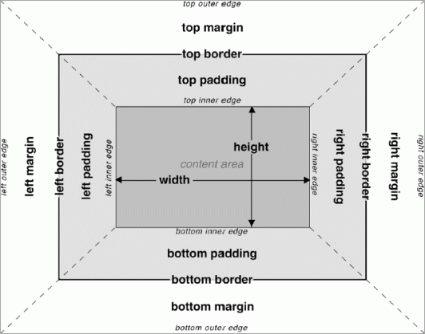

Il box model
Il box model è il modello di riferimento utilizzato dal browser per determinare la spazialit` di un elemento, in quanto determina le dimensioni dell'elemento ed il suo scostamento rispetto agli altri elementi che lo seguono, precedono o affiancano
Width
Larghezza di un elemento, occupata dai contenuti e all'interno della quale se settato è visibile il background.
Height
Altezza di un elemento, occupata dai contenuti e all'interno della quale se settato è visibile il background.
#box1{width:500px; height:300px; background-color:blue;}
Padding
Spaziatura che va dall'area del contenuto al bordo di un elemento, nella quale se settato è visibile il background. Il padding può essere determinato sui quattro lati tramite:
- padding-top
- padding-right
- padding-bottom
- padding-left
Oppure tramite la forma abbreviata con la sola parola padding:
padding:10px; è uguale a -----> padding-top:10px; padding-right:10px; padding-bottom:10px; padding-left:10px;
padding:10px 20px; è uguale a -----> padding-top:10px; padding-bottom:10px; padding-right:20px; padding-left:20px;
padding:10px 5px 7px 18px; è uguale a -----> padding-top:10px; padding-right:5px; padding-bottom:7px; padding-left:18px;
padding:10px 5px 9px; è uguale a -----> padding-top:10px; padding-right:5px; padding-bottom:9px; padding-left:5px;
Border
Bordo che circonda l'elemento, può essere definito su 4 lati diversi, per ogni lato può essere specificato in questo modo:
border-top-width:1px; spessore del bordo
border-top-style:solid; stile del bordo (es.: solid, dashed, dotted...)
border-top-color: red; colore del bordo (espresso tramite valore testuale, rgba o hex)
Forma abbreviata per il singolo lato
border-top:1px solid red;
Forma abbreviata per 4 lati
border:1px solid red;
Margin
Spazio trasparente esterno all'elemento, che indica lo scostamento di esso dagli altri elementi che lo seguono, precedono o affiancano. Non è visibile nessun background all'interno del margin. Il margin può essere impostato sui quattro lati attraverso:
- margin-top
- margin-right
- margin-bottom
- margin-left
oppure tramite la modalità abbreviata:
margin:10px; -----> margin-top:10px; margin-right:10px; margin-bottom:10px; margin-left:10px;
margin:10px 20px; -----> margin-top:10px; margin-bottom:10px; margin-left:20px; margin-right:20px;
margin:10px 5px 12px 21px; -----> margin-top:10px; margin-right:5px; margin-bottom:12px; margin-left:21px;
margin:10px 5px 6px; -----> margin-top:10px; margin-right:5px; margin-bottom:6px; margin-left:5px;
margin:0 auto
Indica margin-top e margin-bottom 0px e margin-left e margin-right auto, dove auto serve per centrare un elemento che ha la proprietà width dichiarata e impostata su un valore.
La proprietà Box-sizing
Ovvero la proprietà che determina come vengono calcolate la larghezza / altezza "effettiva", di ingombro all'interno del viewport, degli elementi.
box-sizing:content-box;
È il valore di default, significa che width/height determinano la larghezza/altezza destinata ai contenuti, alla quale si aggiungeranno padding e border per determinare la larghezza/altezza definitiva dell'elemento sul viewport.
La larghezza/altezza dell'elemento sul viewport è data da:
width + padding(left/right) + border(left/right)
height + padding(top/bottom) + border(top/bottom)
box-sizing:border-box;
Semplifica notevolemente i calcoli, width è la larghezza totale ed height, l'altezza totale, alla quale vengono sottratti border e padding. Quel che resta ` lo spazio dedicato ai contenuti.
La larghezza/altezza dell'elemento sul viewport è data da:
width - padding(left/right) - border(left/right)
height - padding(top/bottom) - border(top/bottom)